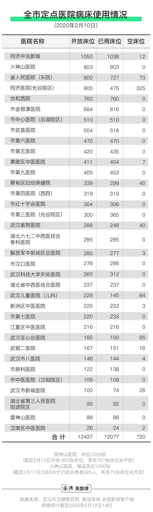
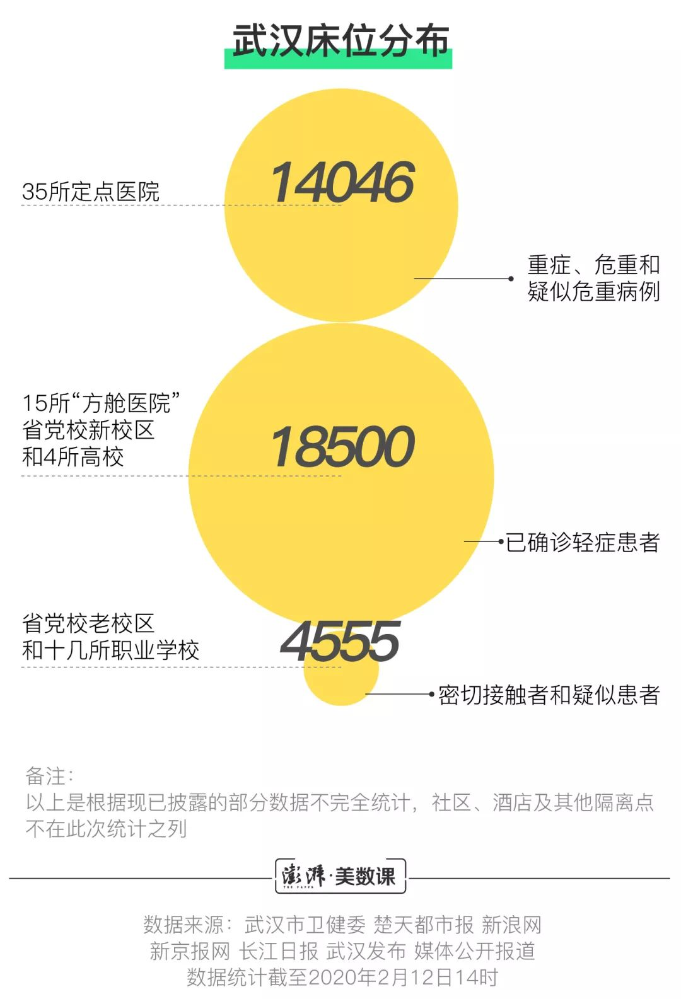

3天备好2000个床位，武软学院回应宿舍征调质疑
原文链接 备份链接 此前，这里被丢满了学生们的盒子、袋子等物品，现在已经清理干净。（王伟凯/摄） 全文共2865字，阅读大约需要7分钟。 武软的学生宿舍大都没有电梯，如果将物资统一搬运到楼下，时间和人力上都无法保障。于是，学校个别教职 …
澎湃新闻记者 伍银芳 蔡琳 吕妍
最近几天，武汉一些学校宿舍被征用的相关信息引起网友热议。而这一热议的背后，都源于武汉市新冠肺炎疫情防控指挥部征用学校宿舍。随着武汉的新冠肺炎患者确诊数量越来越多，定点医院和已投入使用的三所方舱医院的床位已经不够用，所以，另外12所“方舱医院”已经陆续在建，学校宿舍也被征用。
根据武汉市新型肺炎防控指挥部医疗救治组在2月5日发布的《关于进一步规范新型冠状病毒感染的肺炎定点收治医院患者收治工作的通知》和媒体公开报道，目前我们得知，目前收治病人呈几个梯度：定点医院主要用于收治重症、危重和疑似危重病例；方舱医院主要用于收治轻症患者；而被征用的学校宿舍，则部分作为医疗点收治轻症患者；另外一部分作为隔离点，接收密切接触者和疑似患者。
十多所学校宿舍被征用，改造出11455张床位
2月7日，湖北省召开第17场新冠肺炎疫情防控工作新闻发布会上，武汉市委常委、常务副市长胡亚波透露，将省委党校的新校区和武汉市属4所高校（江汉大学、武汉商学院、武汉软件工程职业学院、武汉城市职业学院）改造为定点医疗点，用于收治已经确诊的轻症患者。另外，据《楚天都市报》报道，武汉市教育局直属的6所中职学校以及其他几所职业学校，还有省委党校老校区作为疫情防控集中隔离场所。十多所学校共改造出床位约11455张，其中定点医疗点约6900张，集中隔离点约4555张。

学校宿舍要成为隔离点和医疗点，仍然需要一些必备物资和特殊改造，并根据“一校一策”原则制定方案。
有些学校给每个床位配备了相应物资。以武汉城市职业学院为例，每间房间均有独立卫生间、空调等设施，免费提供床上用品六件套，生活日用品13样(14件)：水桶1个，面盆1个，开水瓶1个，牙膏1只，牙刷1个，洗漱杯1个，卫生卷纸1筒，垃圾篓1个，垃圾袋1卷，洗手液1瓶，拖鞋（布）1双，拖鞋（凉）1双，毛巾2条。
据此前新京报网报道，武汉商学院的寝室要进行改造。除了要增加一条380V的高电压供医疗器械使用，还要改造卫生间与化粪池连接的管道系统，以保证被隔离人群的排泄物经过消毒后排出。更重要的是，由于学生的床是“上床下柜”结构，所以要把床体4条腿“锯下来”，方便患者上下。学校的一系列处理措施考虑周到，但是“锯床”的动作是否在未来会给学生带来一些问题，希望校方能够考虑到，并合理处置。
15所“方舱医院”提供上万张床位
除了已经建成（2月3日）并投入使用的洪山体育馆（800张床位）、武汉客厅（2000张床位）、武汉国际会展中心（1600张床位）三所方舱医院之外，2月4日起，又有12所在陆续建设中。届时15所“方舱医院”将可以提供11600张床位（这个数字不包含两所未公布数据的“方舱医院”）。“方舱医院”主要用于收治已确诊轻症患者。

35所“定点医院”万余张床位是抗疫最前线
根据武汉市卫健委官网自2月1日起发布的“全市定点医院病床使用情况”数据显示，定点医院及其床位数量一直在增加。

截至2月10日，武汉市已经开放35家定点医院，开放床位12437个，其中，雷神山和火神山分别开放床位803张、88张。而根据此前报道，雷神山和火神山医院共编设床位2500张。所以，加上还未开放的“两神山”床位，这35家定点医院总共可以提供床位14046张，主要用于收治重症、危重和疑似危重病例。

根据以上公开数据整理，我们得知，待所有改造完成，包括定点医院、方舱医院和已被征用的学校宿舍在内，武汉市的床位数将有37101个左右，其中，约有32546个床位用于收治已经确诊的患者。除了省党校老校区和已经公布的十几所职业学校外，还有酒店和社区等隔离点，但因为相关公开数据不多，所以没有放在此次统计之列。

备注：以上是根据现已披露的部分数据不完全统计，对于社区隔离点及其他隔离点不在统计之列
资料来源：武汉市卫健委官网 湖北省人民政府官网 楚天都市报 新浪网 新京报网 长江日报 武汉发布 媒体公开报道
数据统计截至2020年2月12日14时
本期编辑 邢潭
推荐阅读


原文链接 备份链接 此前，这里被丢满了学生们的盒子、袋子等物品，现在已经清理干净。（王伟凯/摄） 全文共2865字，阅读大约需要7分钟。 武软的学生宿舍大都没有电梯，如果将物资统一搬运到楼下，时间和人力上都无法保障。于是，学校个别教职 …
原文链接 备份链接 武汉紧急改造启用的多个临时性“方舱医院”，承担了此次疫情中数量最大的隔离任务。虽然时间紧任务重，方舱医院的内部运行已经从最初的忙乱走向有序 文 | 《财经》记者 刘以秦 编辑 | 谢丽容 2月6日凌晨3点，在武汉一家 …
原文链接 备份链接 一床难求，这是治愈率与收治率失衡的结果 记者 | 吴洋洋 编辑 | 王姗姗 图表资料整理 | 实习记者 文思敏、袁颖 制图 | 程 星 “2月5日当日，市指挥部宣传组对网友在各类互联网平台发布本人或亲友的求助信息做核 …
原文链接 备份链接 06.02.2020本文字数：4302，阅读时长大约7.5分钟 导读：一周时间，武汉新增病例5.5倍增长，累计病例增长3.69倍。 作者 | 第一财经 马晓华 胥会云 武汉封城之后，湖北以外的各省份对新型肺炎展开了“ …
原文链接 备份链接 武汉市各区正在加紧把所有发热人员集中隔离，并进行全部发热人员的检测，目的是让疫情全部暴露出来，之后疫情防控也将从“攻坚战”转至“歼灭战” 图/法新 文 |《财经》特派武汉记者 言清 王小 编辑 | 王小 “今天的会非 …